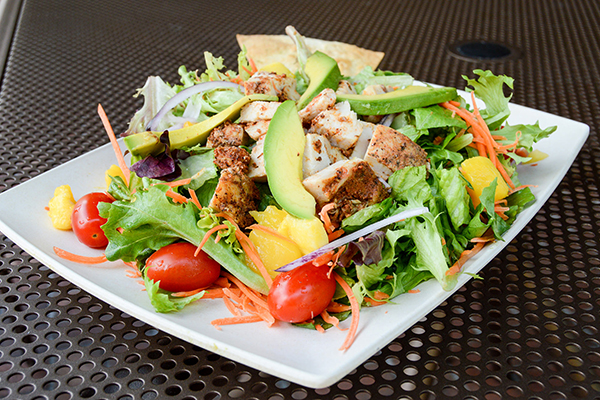

Carribean Chicken Salad Recipe

Description
Spicy Sweet Carribean Jerk Chicken Salad with Newman’s Own Honey Mustard Lite Dressing is a summer
dinner salad that will make you feel like you’re on vacation, no matter where you enjoy it!
Whether we’re at home or off exploring, I want to feel like I’m on vacation from June through August.
I do things all summer long to convince myself I’m on an extended holiday… I listen to reggae music,
sip tiki drinks, wear my swimsuit under my clothes all day, and even cook meals that remind me of
trips past.
Ingredients
- 2 skinless, boneless chicken breast halves
- ½ cup teriyaki marinade sauce
- 2 tomatoes, seeded and chopped
- ½ cup chopped onion
- 2 teaspoons minced jalapeno pepper
- 2 teaspoons chopped fresh cilantro
- ¼ cup Dijon mustard
- ¼ cup honey
- 1 ½ tablespoons white sugar
4 cups corn tortilla chips- 1 tablespoon vegetable oil
- 1 ½ tablespoons cider vinegar
- 1 ½ teaspoons lime juice
- ¾ pound mixed salad greens
- 1 (8 ounce) can pineapple chunks, drained
- 4 cups corn tortilla chips4 cups corn tortilla chips
Steps
- Place the chicken in a bowl, and cover with the teriyaki marinade sauce. Marinate at least
2 hours in the refrigerator.
- In a small bowl mix the tomatoes, onion, jalapeno pepper, and cilantro. Cover salsa, and refrigerate.
- In a small bowl, mix the mustard, honey, sugar, oil, vinegar, and lime juice. Cover dressing, and refrigerate.
- Preheat the grill for high heat.
- Lightly oil grill grate. Place chicken on the grill, and discard marinade. Cook for 6 to 8 minutes on each
side, or until juices run clear.
- Arrange mixed salad greens on plates. Spoon some of the salsa over each salad, and sprinkle
with 1/4 of the pineapple chunks. Break tortilla chips into large chunks, and sprinkle over
salads. Lay some of the grilled chicken strips on each salad. Finally, drizzle dressing
over each salad, and serve.
VOILA, ENJOYYYYYYYY!!